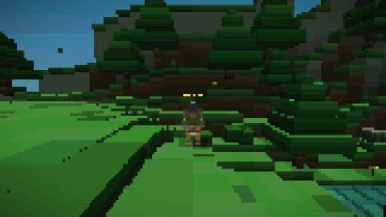
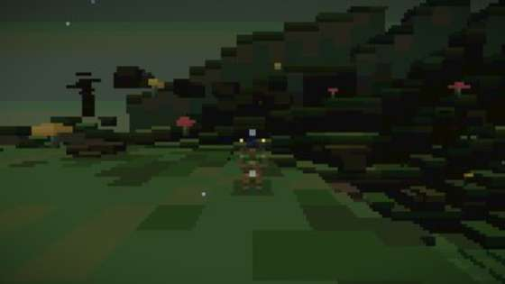
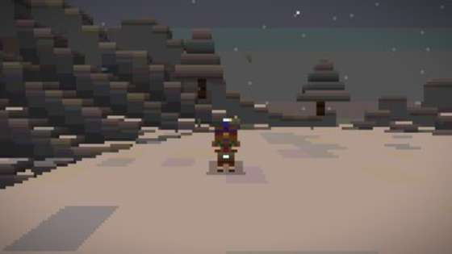
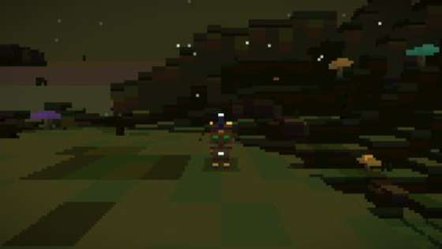
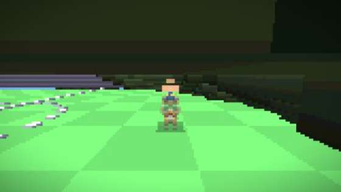
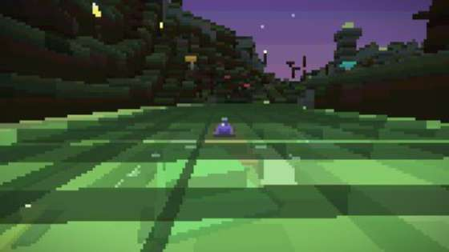
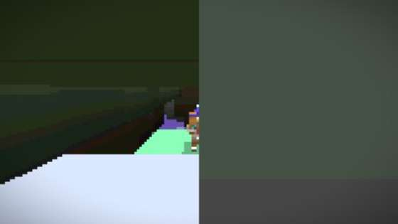
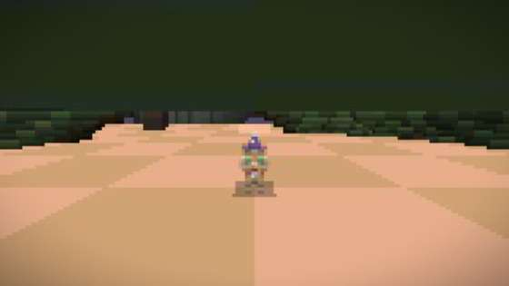

Пиксельная 3D-игра про котов-магов. Прямо в браузере — ничего ставить не нужно.
Скачанный файл — вся игра целиком. Открывается двойным щелчком, интернет не нужен.
Начало у этой истории невесёлое. Зато конец пишете вы.
Коты жили в волшебном мире: тёплые луга, светлые леса, тихие озёра. Никто никого не боялся.
Он стоял в пещере и держал тёмную магию взаперти. Пока он светился, миру ничего не грозило.
Тьма вышла наружу и растеклась по всему миру. Луга почернели, в лесах поселились чудовища.
Монстры разнесли их по клеткам и спрятали в самых дальних углах. Спасти их некому.
Маленький, рыжий и очень упрямый. Ему предстоит пройти сто тридцать мест, разбудить спящие порталы и вернуть свет. Это вы.
Настоящие снимки из игры — ничего дорисованного.








Не только беготня с монстрами.